Basics
Anything anyone does to increase safety and/or reduce distraction is a good step in the right direction. And so is using the correct tool for the job at hand. This is especially important when matching antennas, when we need to know more than an SWR bridge will tell us. Just as important are the typical tools of the trade, and they're covered here.
None of the following should be construed as endorsements or paid advertising. They're only here because they are proven tools for doing the job correctly, the first time.
RF Current Meter
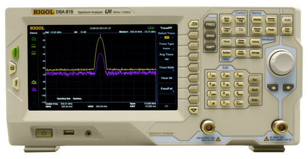
The MFJ-854 is an inexpensive device for measuring RF imposed on conductors. It is mentioned here because it is an ideal tool for checking the presence of common mode current flow on coaxial feed lines — a malady which affects every HF mobile. It uses a 9-volt battery with an automatic off timer to assure long battery life. It can measure RF current as low as 1 mA and can handle up to 3 amps maximum.
While very easy to use, it has one drawback: the ferrite core attached to the top of the 854 is very difficult to open. Thankfully, MFJ provides a small tool to aid in opening the core so the conductor can be inserted. Even then, it takes due diligence and strong fingers. The hole through the ferrite core is large enough to accept RG-8 size coax (0.405″). Follow the directions: set the meter on the high scale first, and work down as necessary.
Antenna Analyzers
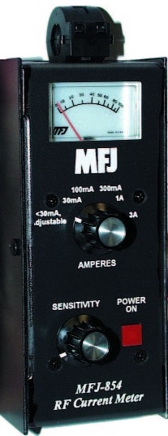
MFJ has been supplying inexpensive antenna analyzers to the amateur radio marketplace for many years. Their MFJ-259B ($250 USD street price) has become as ubiquitous as the directional wattmeter. Using one gives you the complex impedance of any antenna (X and R) up to 650 ohms or so, plus SWR. It does have one drawback: it does not display the actual Z (±j), so you have to figure that out yourself — though it is rather self-evident once you know the X and R values.

All of these shortcomings have been addressed with the introduction of the MFJ-266, with its street price hovering around $330 USD. The MFJ-266 displays all three parameters simultaneously (except for UHF). In some respects it is easier to use than the 259B, while in others somewhat more complicated. It also doesn't have a provision for using rechargeable batteries like the 259B.
It has one very unique feature besides its no-nonsense warranty: a built-in interference detector. If you have a local RF source like an FM broadcast station, the MFJ-266 will indicate that fact as well as its frequency. I don't know of any other antenna analyzer that can do that.
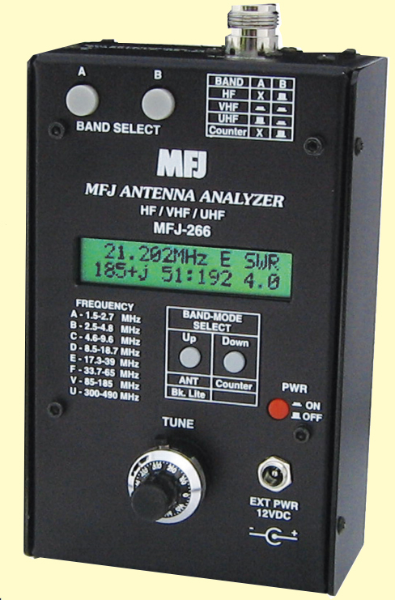
The MFJ-225 Graphing Antenna Analyzer retails for approximately $400. The data it gathers is easier to interpret, and the fact that it is a two-port device increases its value for a variety of reasons. Be prepared to order a few adapters, as the output port is an N connector and the input port is an SMA type. From tuning matching coils to finding resonant points, an antenna analyzer is an invaluable tool which should be in every ham shack, right next to the wattmeter and dummy load.
Spectrum Analyzers
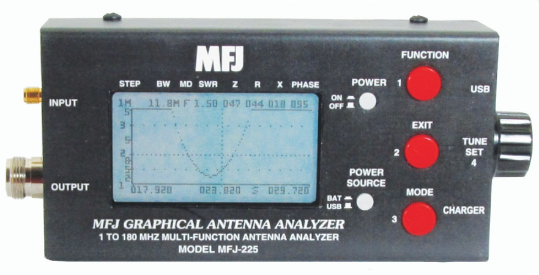
Not many amateurs really need a spectrum analyzer. Those who do typically own surplus HP or Tektronix units originally costing thousands of dollars. However, Rigol, a Beijing-based company with US offices, has invaded our shores with low-cost units rivaling the finest from HP or Tektronix. The DSA815 is their low-cost, entry-level unit selling for about $1,300 plus shipping. The associated videos and PDFs on their site will explain what the DSA815 will do. The question remains: is it an extravagant purchase? Watch the video and you'll know if it is the right instrument for your shack.
Coax Prep Kit
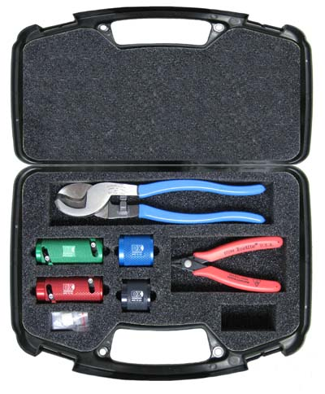
One of the very best coax prep tools is the Ripley Tools UT series, available from DX Engineering. Their complete kit covers RG-8, RG-58, and RG-8X sized cables, and is packaged in a plastic storage box along with a proper coax cutter. The complete kit (DXE-UT-KIT2-D) retails for $190 plus shipping.
With your soldering iron hot, you can cut, prep, and solder on a PL-259 in less than 2 minutes. Unlike other coax cutters on the market, the DXE cutters don't require you to properly place the prep tool at a specific length from the end of the coax — all of the measuring is done for you. I'll never be without one, and neither should you.
Power Checkers
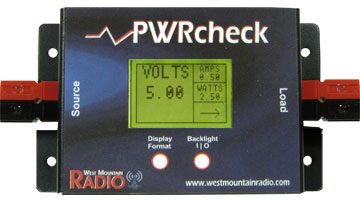
West Mountain Radio makes the PWRcheck, which properly assesses and monitors your backup battery load. It can handle up to 40 amps of load and has 13 display modes including voltage, current, wattage, and amp-hours, complete with programmable alarms. It uses 40A Powerpole connectors for both source and load, has a backlit LCD, stores up to 174,000 sample points for data logging (over 4 months worth), and includes PC software for real-time monitoring, data download, and charting.
Their PWRguard contains a 40-amp, high-power FET switch (no relays) which control circuitry activates. If the input voltage drops below 11.5 VDC or goes above 15 VDC, the PWRguard shuts off the output power. Although aimed at the battery-powered crowd, it has applications in the portable and mobile markets too. Both devices are available from PowerWerx and other fine amateur radio dealers.
Fire Extinguishers
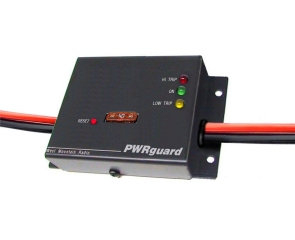
One item every mobile operator should have on board is a fire extinguisher. For mobile use, it should be a universal one rated for multiple fire classes. In the case of mobile use, the 21005765 model (rated 3-A:40-B-C) is an appropriate choice. Class A extinguishers are used for combustible materials such as paper, wood, and most plastics. Class B extinguishers are for flammable or combustible liquids such as gasoline and oil. Class C extinguishers are for electrical fires. They're affordable and easy to use.
miniVNA Pro Vector Network Analyzer
Affordable antenna analyzers are invaluable for finding resonance and impedance within their range (typically <650 ohms). What they can't do is give you a picture (a graph) of the reactance over a given frequency span. This is the forte of a VNA (Vector Network Analyzer).
There are several versions of miniaturized VNAs on the market, but one feature sets the miniVNA Pro apart: Bluetooth connectivity. Heretofore, either the data was stored in the VNA or a tethered cable was required. With Bluetooth, the VNA can transfer live data to its host computer. Its frequency range is from 0.1 to 200 MHz, with a Z range from 1 to 1,000 ohms. Its built-in Li-ion battery is recharged through USB and offers 4 full hours of continuous testing. Since it has two ports, you can even use it for IMD testing. Software covers Windows, macOS, and Linux. Data can be exported in jpg, PDF, and Excel formats. At $650 including the SMA adapter kit, it is a bargain its competitors can't match.
Auto Off
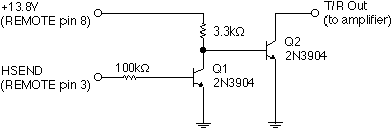
Unfortunately, not all amateur radios have an auto-off feature, especially VHF/UHF ones. This fact causes a lot of amateurs to bypass proper wiring practices just so the radio can't be left on. Now there is a proper solution.
The PowerWerx APO3 is more than just a timed (0, 5, 10, 20 minutes) auto-off device. There are four pre-programmed voltage settings (11.8, 12.1, 12.7, 13.05 volts). Properly programmed, the APO3 will turn off your radio or ancillary equipment just by monitoring the battery voltage. It can handle up to 30 amps, making it compatible with almost any radio. It comes equipped with Anderson Powerpole connectors, making wiring simple and quick. At $60 MSRP, it is also affordable.
Amplifier Interfaces

Amplifier interfaces are a prerequisite for high-power mobile operation, as none of the late-model miniaturized transceivers will directly switch one. The MFJ-704 is one of many sold to the amateur market, and it will switch just about any amplifier including grid-blocked ones. This is overkill in a mobile installation.
The fact is, a very simple circuit can be built in less than an hour that will easily switch any solid-state mobile amplifier. The plans are on Bob Wolbert's (K6XX) web site. As you can see from the schematic, it requires just two resistors and two transistors. I built one of these onto the accessory jack plug that came with my 706 — it is that small and that easy.
The SGC SG500 is the only mobile amplifier which can be safely switched by the Icom IC-706, IC-7000, and the Yaesu FT-857 mobile transceivers without the need for an interface. All others require one. The accessory plug Kenwood supplies for the TS-2000 is identical to the Icom plug (comes unadorned rather than pigtailed) and sells for about $7 from most amateur dealers.
LDG FT-857 External Meter
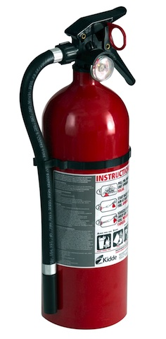
If you use a Yaesu FT-857 mobile, you know how hard the LCD S-meter is to read. The folks at LDG Electronics have come up with an answer. At just $50 retail, it is an elegant solution to the problem. On receive it becomes an S-meter, discriminator indicator, or voltage monitor. On transmit, it measures RF power, SWR, modulation, ALC, or voltage. The only drawbacks are finding room for the meter and homebrewing a mobile bracket. The programming required to get the meter to indicate all of the functions can be frustrating — do yourself a favor and follow the installation directions carefully.
Nifty Mini-Manuals
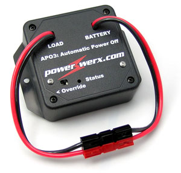
Anyone who owns a menu-driven, miniaturized mobile radio knows how difficult some of them are to program. Adding insult, far too many manuals are written in ambiguous English. Here's the best answer I've found: Nifty Accessories offers a line of Mini-Manuals and Mobile Cards for all of the popular mobile radios, and most handheld as well. They have all of the important programming information clearly defined, easy to read, and in plain English. Prices range from $5 to about $25.
Rescue Tape
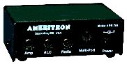
Rescue Tape is a self-fusing silicone tape. It comes in a rainbow of colors, but that's not what makes it special. It is incredibly strong, it will adhere to any surface, effectively sealing out moisture and dirt. It is an ideal product for sealing all manner of connections exposed to the elements, especially in a mobile installation. It is perfect for sealing coax connections too, and when properly applied, it makes them virtually submergible. You can even use it to seal high-voltage connections like those used in auto-coupler applications.
It makes a great emergency bandage, and you can even use it to repair a radiator hose leak. The best part is, when you need to remove it, it leaves no residue — period. Your local Ace Hardware is one source, but it can be ordered online directly from Rescue Tape.
Two-Wire Voltmeters
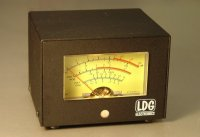
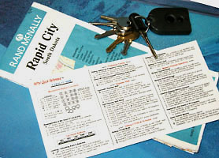
Some things just aren't small enough to fit where you want them to fit. This goes double for voltmeters which are seemingly large and usually ugly. Here are two that aren't.
Martel Electronics makes the QV100 series of two-wire voltmeters. They're not only small physically (0.84×1.71 inches), at about $50 each they're small in cost. Current draw is just 3 mA and they really don't need to be switched. They're unlit, which might be a drawback for some users — a shielded LED solves the problem. In a mobile application, the meter should be shunted with a Zener diode (18–24 volts) to protect the meter from transients.
The Datel LED voltmeters are available in both red and blue LEDs, sell for about $60 plus shipping, and the good part is they're weatherproof. Like the Martel they are two-wire, which simplifies wiring. They also sell backlit LCD voltmeters, but they're not weatherproof. Datel also sells AC meters and ammeters.
Video Display for Icom IC-7000

If you have an Icom IC-7000 and a factory-installed navigation system, here's just the gadget you need. TVandNav2Go makes video adapters for just about every factory-installed navigation system ever made. The best part about the unit is it reduces the distraction we all contend with. The left photo depicts the unit in my Honda Ridgeline.
The TVandNav2Go is in a metal box about 1×3×4 inches. The manual is rather lame, but installation is easy enough to figure out. You have to supply switchable DC power to the unit, and a SPST switch or two for controlling it, and select the display sync mode. There's even a second, switchable input for a backup camera or DVD player. But before you decide on the latter, remember there are laws about watching video while in motion.
If you don't have a Navi, then consider an AudioVox monitor mirror as an option. In this case, you won't need the video adapter, but you will still need to provide power to the mirror.
I have been asked several times if anyone makes a heads-up video adapter for amateur radio use. Fortunately, there isn't one. Heads-up displays were all the rage at GM a few years ago, and they're still an option on a couple of models. But the truth is, they're distracting to most drivers, especially those who wear bifocals. They're always in your field of vision. Even when turned off, the reflective material plated on the glass is evident. And forget about using one in daylight.
Modern Considerations
Several of the products mentioned in this article have been updated, discontinued, or superseded. The core recommendations — measure RF current on your feedline, use a real antenna analyzer rather than guessing, carry a fire extinguisher, keep the radio from draining your battery — remain as valid as ever.
NanoVNA has become the dominant budget VNA option since this content was written. At under $100, it covers 10 kHz to 1.5 GHz and provides full S-parameter measurements. It is not in the same calibration class as the miniVNA Pro, but for field use in adjusting mobile antennas, it is a remarkable value. Numerous accessories, PC software, and a large user community make it very practical.
The Rigol DSA815 spectrum analyzer mentioned here has been followed by later models with better specifications at similar or lower prices. If you're investing in a spectrum analyzer for your shack, check the current lineup — the value proposition in this category has improved dramatically with Chinese instrumentation. The fundamental recommendation stands: if you're serious about mobile HF, a spectrum analyzer will show you interference sources and IMD products that no other instrument can.
For the video display gadget with the IC-7000: the IC-7000 itself is now a legacy radio, and TVandNav2Go has evolved its product line to support current factory navigation systems. If you're running an IC-7100 or later Icom, note that Icom chose not to include composite video out on those models — a decision that continues to frustrate mobile operators who valued that feature on the 7000.